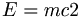

De: La Frikipedia, la enciclopedia extremadamente seria.
De: La Frikipedia, la enciclopedia extremadamente seria. De: La Frikipedia, la enciclopedia extremadamente seria.

|
FRIKIPEDIA QUIERE QUE ESTA DEFINICIÓN
PASE A SER UN ARTÍCULO FRIKIPÉDICO La información contenida en este artículo es una mínima parte de su jugo total, así que ponte los guantes, saca el tupperwere y empieza a exprimir el tema. Si lo haces serás recompensado con una galleta en almíbar y algo más. |
«Que estais mas fumaos! »
~ Fumador de cachimba a unos ciclistas que acababan de adelantarle bajo un puente
« »
~ Einstein tras fumarse un cachimba
«Iyo, mostro, ke veo verde, compadre »
~ Cani tras fumarse su cachimba matutina de maria
La cachimba, también llamada caximba, o cashimba, es un objeto destinado a "colocarte" o a dejarte "to fumao" cuyas características más conocidas hacen que la usan sean capaces de cantar en un tono de voz mucho más grave del que suele ser habitual en ellos. Además, ha sido usada por los grandes maestros como máquina de humo, una interesante aplicación que puede producir desde nimiedades como los barcos de humo que hizo Gandalf en El Señor de los Anillos, o enormes universos de humo, como Chuck Norris puede hacer.
La primera vez que le enseñas a tu madre que es una cachimba le sueles explicar que eso no es malo, que si se filtra la nicotina en el hagua, que si noseque...... Pero la verdad es que es peor que fumarte un porro de 2 metros, doblao, sin filtro y hecho de papel de periódico.
El humo de la cachimba también se suele utilizar para las fotos hipsters, eso hace que ellos se sientan orgullosos de ser tan sumamente retrasados al enseñar que fuman de una máquina de mierda.
La sisha tiene muchísimos nombres, en castellano se la conoce comunmente como cachimba, o pipa de agua, pero tiene otros nombres como hookah, Nargile hay más pero suelen ser variaciones, de estos.
Se empezó a fumar narguile en los países orientales, aunque no se sabe con precisión en cual. Se cree que fue en la India, en China o en Egipto hace unos 600 años (los chinos siempre serán los más aventajados en todo). Al principio, la base estaba hecha de coco, pero con los años ha ido evolucionando y mejorando llegando a las actuales, fabricadas de cerámica o acero las más comunes y de oro o plata las más lujosas.
Realmente no sabemos de que estan hechas las que venden en los puestos de los moros, que son las más fáciles de encontrar pero viendo la calidad de sus CDs y DVDs intuimos que no debe ser un material de mucha calidad.
La cachimba puede usarse para fumarse colocón. Se pueden encontrar tabacos aromáticos: con sabores a manzana, fresa... que no son como el tabaco de los nicotina. Además el frasco con agua es por donde pasa el humo y deja todos los residuos, así al aspirar es una sensación más refrescante que la de un cigarro. Son todo ventajas!
Vale, es cierto en una cachimba también se puede fumar hachís... y otras sustancias que puedan darte un buen viaje! La gente que no tiene presupuesto emplea geranios, manzanilla, libros (hay que ver lo que hace la necesidad) pero nosotros somos gente sana.... no? hahahaha (risa).
La Cachimba consta de 4 partes esenciales:el cacharro de cristal, el mango o tubo para aspirar, el filtro y finalmente el cachibache de cerámica o barro que si lo compras en un "moro", no se sabe muy bien por qué, pero siempre te lo van a dar mas rebentao que las neuronas de un cani.
Tras terminar es recomendable limpiar la cachimba, quitadle el agua y pasarle unos cepillitos sobre todo si vais a cambiar de tabaco porque entonces se mezcla el sabor y ya la hemos cagado, otra vez.
Autor(es):